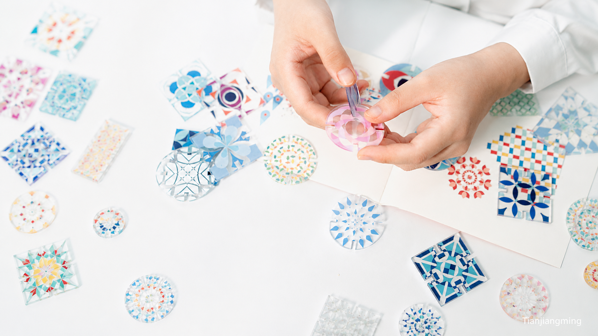

视觉设计 · 图形设计 · 书籍设计 · 实验设计 / 2024
梦境图形系统
DREAM GRAPHIC SYSTEM
将非连续、难以描述的梦境，转化为一套可以被阅读、感知与重新组合的视觉语言。

00 / PROJECT OVERVIEW
从感知边界出发，把梦境拆解、编码，并重新组合为阅读与空间体验。
梦境中的内容大多来源于现实，却不完全遵循现实逻辑。项目从梦境、清醒状态、睡眠临界、阈限空间与视错觉展开研究，将人物、场景、行为、事件与物件拆解为信息单位，再通过符号、重复、纹理、尺度、方向与叠加建立可持续生成的视觉系统。系统最终延展至书籍、平面物料、可操作媒介与投影展示。
- 年份 / YEAR
- 2024
- 类型 / TYPE
- 视觉设计 · 图形设计 · 书籍设计 · 实验设计
- 方向 / FOCUS
- 梦境研究 · 信息拆解 · 视觉编码 · 感知实验
- 角色 / ROLE
- 独立设计
PROJECT PREVIEW
三条叙事线索
从梦境的拆解、视觉编码到重新组合，先快速了解项目的研究方法、图形系统与最终成果。
DETAILED INDEX
完整项目导航
按照研究、视觉生成、编辑应用、互动与空间逐层浏览；点击任意子项可直接到达对应内容。
DESIGN QUESTION
设计命题
梦境并不是完全脱离现实的世界，更像是现实信息重新排列后产生的另一种状态。人物、场景和行为仍可识别，但尺度、空间、时间与因果关系开始变化。如果梦境是一种对现实信息的重新组织，是否可以建立一套视觉规则，将这种拆解、偏移与重组的过程呈现出来？
核心叙事
01 / DREAM DECOMPOSITION
梦境的拆解
从真实与非真实的边界开始
项目围绕梦境与现实之间不断变化的边界展开：现实对象依然存在，但大小、距离、方向、空间和因果关系可能失去稳定性。研究由此进入睡眠临界、阈限、视错觉与具体梦境样本，并把连续叙事拆解为可进一步编码的信息单位。
01.1｜研究背景
梦境中的人物、场景和行为大多来自现实，却以不稳定的关系重新出现。项目先整理研究路径、梦境类型与现实线索，建立从资料到视觉方法的基础。
01.2｜阈限与感知
大小、方向、图底、远近和平面与立体的判断会受到周围信息和观看方式影响。视错觉因此成为方法线索：通过重复、尺度、方向与空间判断的变化，使稳定信息发生偏移。
01.3｜梦境样本
具体梦境被整理为简述、主题、关键词与视觉场景，使叙事能够被比较、分类和进一步提取。
01.4｜信息提取与分类
连续叙事被拆解为人物、场景、行为、事件与物件。概念手稿记录了从现实形态到方向、节奏与重复关系的早期尝试。
02 / VISUAL CODING
梦境的视觉编码
语义 → 基础形态 → 符号 → 重复 → 纹理 → 组合
分类后的语义被转化为基础几何形态；单一符号通过复制产生密度与纹理，再借助尺度、位置、遮挡、方向和环境建立新关系。视觉系统由符号字典发展为可持续生成的规则。
02.1｜语义转译
项目寻找能够表现结构、方向或行为特征的视觉单位，以开合、比例、排列与结构差异，把文字信息转化为可独立使用的图形。
02.2｜基础符号
人物、行为、场景与事件在统一几何逻辑中形成可识别的符号族群。先以系统总览建立规模，再通过局部图组观察差异。
02.3｜重复与纹理
单一符号通过连续复制形成重复，重复产生密度，密度进一步形成纹理。具体信息因此转化为空间、节奏与氛围的视觉材料。
02.4｜组合规则
人物可以成为结构，行为可以成为背景，场景也可以由重复单位构成。尺度、位置、遮挡、方向与密度不断建立新的视觉关系。
02.5｜现实与梦境之间
抽象图形被重新置入建筑、道路、自然环境与日常场景。随着尺度、位置、透视和环境变化，同一符号产生不同空间感知，回应现实与非现实之间不断变化的阈限。
MJB / BLUE THRESHOLD
MJL / GREEN THRESHOLD
MJR / WARM THRESHOLD
MJW / GREY THRESHOLD
03 / RECOMBINATION
梦境的重新组合
从图形系统进入阅读、操作与空间
符号、纹理、影像与文字被组织进书籍，并进一步成为可以移动、覆盖和重新排列的拼图媒介。视觉系统最终通过投影脱离固定页面，使重新组合从图形方法发展为阅读、操作与空间观看方式。
03.1｜书籍系统
页面通过尺度、位置、密度、重复与留白建立关系。读者不只依赖文字，也通过符号的出现、变化与组合形成非线性阅读。
03.2｜平面物料
封面、海报与平面应用以系列关系呈现，使图形系统在不同尺度和载体上保持一致，同时产生不同的阅读强度。
03.3｜拼图互动
视觉单位被制作成可移动、覆盖与重新排列的实体组件。整体产品、组件细节、手部操作与新组合结果按连续动作展开，使观看者成为视觉重组的参与者。
03.4｜投影与空间
投影使图形离开固定页面，图形尺寸、位置与观看距离再次变化，页面关系转化为图形、真实环境、身体与空间之间的关系。
03.5｜最终呈现
项目以书籍、拼图互动与投影空间的连续成果收束：同一套视觉语言在阅读、操作与观看距离的变化中持续生成新的关系。
04 / CONCLUSION
项目总结
项目建立的不是一套用于解释梦的标准答案，也不是对具体梦境的直接插画，而是一种将梦境信息视觉化的方法。从感知边界研究开始，人物、场景、行为与事件被拆解为信息，再编码成可以重复和组合的视觉单位。随着符号进入纹理、现实影像、书籍、实体操作与空间，同一套视觉语言不断改变观看方式。
核心设计路径
- 01研究感知边界
- 02拆解梦境信息
- 03建立视觉编码
- 04生成图形系统
- 05重组阅读关系
- 06延展互动与空间